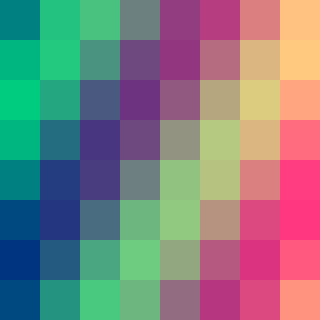
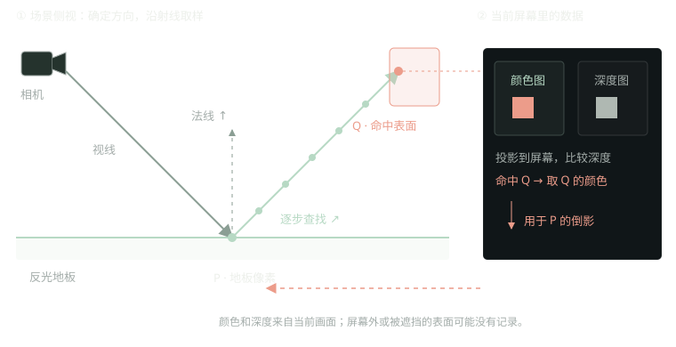

THE LEARNING NOTEBOOK
VAT 与 SSRP.
今天学习了 VAT 与 SSRP。
术语说明：原记录中的“SSRP”，这里按屏幕空间反射来讲，常用缩写是 SSR。它与屏幕空间平面反射（SSPR）的实现不同。
01 / VERTEX ANIMATION TEXTURES
VAT：把动作存进贴图，再读出来
模型由许多点组成，这些点叫顶点。只要知道每个点在每一帧的位置，就能把动作重新播放出来。
VAT 像一本“顶点位置表”：贴图里的颜色，其实是在保存数字。以最容易理解的固定顶点变形为例，R、G、B 三个通道可以分别保存经过编码的 X、Y、Z 位置或位移。
- 先录好动作。在制作软件里算好动画，把每一帧各顶点的位置写进贴图，这一步叫“烘焙”。
- 播放时查表。顶点编号决定读哪里，播放时间决定读哪一帧。
- 让顶点搬家。GPU 上的顶点着色器把读到的数字还原成位置，移动顶点；连续播放，模型就动了。相邻帧之间还可以插值，让动作更顺滑。
原理参考：Mike Lyndon 的 VAT 编码说明、Keijiro 的播放示例。
位置贴图 · 8 个顶点 × 8 帧

横向找顶点 → 纵向找帧 ↓
读取这一行 → 顶点组成的新形状
选择帧数，观察同一批顶点怎样移动。
为什么有用？复杂动作可以预先算好，运行时由 GPU 读取播放，减轻 CPU 负担。代价是占用贴图内存，而且它更像播放录像：不擅长临时改变成全新的物理动作。SideFX 官方说明 ↗
看一个真实 VAT 动画 · 原作者 GIF

02 / SCREEN SPACE REFLECTIONS
SSR：在已经画好的画面里找倒影
想让地板映出一个红色物体，SSR 会先利用当前相机已经画出来的东西：颜色图告诉它“这里是什么颜色”，深度图告诉它“这里的表面离相机多远”，法线告诉它“表面朝哪里”。Unity 文档 ↗
- 确定反射方向。从地板上的一个像素出发，用视线方向和表面法线，算出向哪里寻找倒影。
- 沿途检查深度。沿反射射线取样，把采样点投影回屏幕，并与深度图比较，判断有没有碰到画面中记录的表面。这叫“射线步进”。
- 找到后取颜色。若判断命中红色物体，就读取命中位置的画面颜色，再按材质反射强度、粗糙程度等混合到地板上。
射线与深度比较的原理：Morgan McGuire / Screen Space Ray Tracing。

为什么倒影会突然消失？
因为它只拿到了相机当前记录的那部分场景。物体移出屏幕、被挡住，或需要反射它的背面时，单靠这些数据就不够了；于是可能出现缺口、闪烁或边缘淡出。游戏常用反射探针等其他方案补上。
看一个水面 SSR 效果 · 原作者 GIF

一句话记住
VAT：提前把动作存成贴图，GPU 查表，让顶点动起来。
SSR：沿反射方向查当前画面的深度，命中后取颜色，拼出倒影。